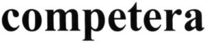

Trade Mark Journal No.2026/011 13 March 2026
WO0000001904140 (9,35,42)
Office of origin: Ukraine
Date of International Registration:4 August 2025
Date of designation in the UK:
4 August 2025

- Class 9
- 3D spectacles; ticket dispensing terminals, electronic; automated teller machines [ATM]; steering apparatus, automatic, for vehicles; automatic indicators of low pressure in vehicle tires / automatic indicators of low pressure in vehicle tires; parking meters; aerometers; asbestos clothing for protection against fire; asbestos gloves for protection against accidents; asbestos screens for firefighters; accelerometers; actinometers; accumulators, electric; accumulators, electric, for vehicles; acoustic couplers; alidades; altimeters; ammeters; anemometers; anodes; anode batteries / high tension batteries; aerials / antennas; anticathodes; remote control apparatus; apparatus to check franking / apparatus to check stamping mail; igniting apparatus, electric, for igniting at a distance / electric apparatus for remote ignition; apparatus and installations for the production of X-rays, not for medical purposes; apparatus for fermentation [laboratory apparatus]; testing apparatus not for medical purposes; apertometers [optics]; acidimeters for batteries; apparatus and instruments for astronomy; audio and video receivers; audiovisual teaching apparatus; beacons, luminous; lighting ballasts; battery jars / accumulator jars; toner cartridges, unfilled, for printers and photocopiers; barometers; batteries for lighting; batteries, electric; cordless telephones; balances [steelyards] / lever scales [steelyards] / steelyards [lever scales]; betatrons; binoculars; computer memory devices; bullet-proof waistcoats; directional compasses; scales; weighbridges; tone arms for record players; plumb bobs; vacuum gauges; variometers; shoes for protection against accidents, irradiation and fire; terminals (electricity); sockets, plugs and other contacts [electric connections] / plugs, sockets and other contacts [electric connections]; switches, electric; switchboxes [electricity]; gauges; measuring instruments; measuring apparatus; measuring devices, electric; measures; current rectifiers; high-frequency apparatus; branch boxes [electricity]; video screens; camcorders; video cassettes; video baby monitors; video telephones; answering machines; viewfinders, photographic; sighting telescopes for firearms / telescopic sights for firearms; viscosimeters; levelling staffs [surveying instruments] / rods [surveying instruments]; peepholes [magnifying lenses] for doors; marking buoys; fire extinguishers; fibre [fiber (Am.)] optic cables; voltmeters; battery chargers; ear plugs for divers; gas testing instruments; gasometers [measuring instruments]; discharge tubes, electric, other than for lighting / electric discharge tubes, other than for lighting; galena crystals [detectors]; galvanic batteries; galvanic cells; galvanometers; hands-free kits for telephones; heliographic apparatus; surveying apparatus and instruments; weights; hygrometers; hydrometers; needles for record players / styli for record players; holograms; lightning conductors [rods] / lightning arresters / lightning conductors; sounding leads; buzzers; loudspeakers; range finders / telemeters; decompression chambers; densimeters; densitometers; detectors; smoke detectors; counterfeit coin detectors; juke boxes for computers; bells [warning devices]; mirrors for inspecting work; mirrors [optics]; dictating machines; dynamometers; floppy disks; disks, magnetic; disk drives for computers; telerupters; distillation apparatus for scientific purposes; diffraction apparatus [microscopy]; breathing apparatus for underwater swimming; breathing apparatus, except for artificial respiration; diagnostic apparatus, not for medical purposes; slide projectors / transparency projection apparatus; diaphragms for scientific apparatus; diaphragms [photography]; DNA chips; adding machines; dosage dispensers / dosimeters; road signs, luminous or mechanical; traffic cones; jigs [measuring instruments]; fuse wire / wires of metal alloys [fuse wire]; choking coils [impedance]; furnaces for laboratory use / ovens for laboratory use; screens [photography]; exposure meters; electrified rails for mounting spot lights; electric installations for the remote control of industrial operations; electrical adapters; electric door bells; electricity conduits; electrified fences; electro-dynamic apparatus for the remote control of railway points; electro-dynamic apparatus for the remote control of signals; electromagnetic coils; electronic publications, downloadable; electronic tags for goods; electronic pocket translators; electronic pens for visual display units; electronic notice boards; epidiascopes; ergometers; encoded identification bracelets, magnetic; locks, electric; electronic agendas; voltage surge protectors; fuses; protection devices against X-rays, not for medical purposes; protective suits for aviators; protective masks; goggles for sports; protective helmets for sports; protective helmets; balancing apparatus; acoustic alarms / sound alarms; sound reproduction apparatus; phonograph records / sound recording discs; sound recording carriers; sound recording strips; sound recording apparatus; sound transmitting apparatus; acoustic conduits; wire connectors [electricity]; junction boxes [electricity]; couplers [data processing equipment]; connections for electric lines; couplings, electric / connections, electric; connectors [electricity]; mechanical signs; signs, luminous; probes for scientific purposes; sounding apparatus and machines; readers [data processing equipment]; bar code readers; inverters [electricity]; pressure indicators; slope indicators / clinometers; incubators for bacteria culture; interfaces for computers; ionization apparatus not for the treatment of air or water; cables, electric; calipers; calibrating rings; pocket calculators; capillary tubes; holders for electric coils; memory cards for video game machines; integrated circuit cards [smart cards] / smart cards [integrated circuit cards]; encoded key cards; video game cartridges; carriers for dark plates [photography]; cassette players; cash registers; cathodes; cathodic anti-corrosion apparatus; mouse pads; acid hydrometers; cinematographic film, exposed; cinematographic cameras; clinometers; push buttons for bells; coaxial cables; covers for electric outlets; encoded magnetic cards; collectors, electric; dog whistles; compact discs [audio-video]; compact discs [read-only memory]; comparators; directional compasses; marine compasses; computers; computer hardware; computer game software; computer keyboards; computer peripheral devices; magnetic tape units for computers; computer programs [downloadable software]; computer programs, recorded; computer operating programs, recorded; electric apparatus for commutation; condensers [capacitors] / capacitors; contacts, electric; contact lenses; boiler control instruments; correcting lenses [optics]; cabinets for loudspeakers; battery boxes / accumulator boxes; clothing for protection against fire / garments for protection against fire; pipettes; pedometers; compasses [measuring instruments]; circular slide rules; bullet-proof clothing; azimuth instruments; laboratory trays; logs [measuring instruments]; lasers, not for medical purposes; lactodensimeters; lactometers; darkroom lamps [photography]; eyeglass chains / pince-nez chains; laptop computers; spectacle lenses; rulers [measuring instruments]; carpenters' rules; flashlights [photography]; optical lanterns / optical lamps; counters / meters; revolution counters; distance recording apparatus / apparatus for recording distance; milage recorders for vehicles / kilometer recorders for vehicles; slide-rules; sounding lines; magnifying glasses [optics]; magnets; decorative magnets; magnetic encoders; magnetic data media; magnetic wires; magnetic tapes; videotapes; crash test dummies; pressure gauges / manometers; solderers' helmets; mathematical instruments; materials for electricity mains [wires, cables]; weighing machines; money counting and sorting machines; material testing instruments and machines; furniture especially made for laboratories; megaphones; portable media players; diaphragms [acoustics]; metal detectors for industrial or military purposes; meteorological instruments; meteorological balloons; rules [measuring instruments]; dressmakers' measures; metronomes; mechanisms for counter-operated apparatus; mouse [computer peripheral]; copper wire, insulated; micrometers / micrometer gauges; micrometer screws for optical instruments; microprocessors; microscopes; microtomes; microphones; surveying chains; measuring spoons; mobile telephones / cell phones / cellular phones; modems; monitors [computer programs]; monitors [computer hardware]; editing appliances for cinematographic films / apparatus for editing cinematographic film; nautical apparatus and instruments; marine depth finders; naval signalling apparatus; juke boxes, musical / coin-operated musical automata [juke boxes]; animated cartoons; junction sleeves for electric cables; coils, electric; inductors [electricity]; navigation apparatus for vehicles [on-board computers]; navigational instruments; teaching apparatus; headphones; teeth protectors; knee-pads for workers; semi-conductors; screw-tapping gauges; chargers for electric batteries; neon signs; identification threads for electric wires; thread counters / waling glasses; surveyors' levels; levelling instruments; verniers; nose clips for divers and swimmers; notebook computers; objectives [lenses] [optics]; lenses for astrophotography; close-up lenses; limiters [electricity]; sheaths for electric cables; egg-candlers; clothing for protection against accidents, irradiation and fire; clothing especially made for laboratories; ozonisers [ozonators]; octants; spectacles [optics]; sunglasses; eyepieces; ohmmeters; spectacle frames; pince-nez mountings / eyeglass frames; optical glass, optical goods; optical discs; optical character readers; optical condensers; optical lenses; optical data media; optical apparatus and instruments; telescopic sights for artillery; protection devices for personal use against accidents; oscillographs; cleaning apparatus for phonograph records / cleaning apparatus for sound recording discs; safety restraints, other than for vehicle seats and sports equipment; pince-nez / eyeglasses; stills for laboratory experiments; intercommunication apparatus; speaking tubes; transmitters [telecommunication]; transmitters of electronic signals; mechanisms for coin-operated apparatus; coin-operated mechanisms for television sets; oxygen transvasing apparatus; switchboards; commutators; spools [photography]; circuit breakers; converters, electric; periscopes; personal stereos; punched card machines for offices; divers' masks; drying racks [photography]; wrist rests for use with computers; pyrometers; egg timers [sandglasses] / hourglasses; planimeters; plane tables [surveying instruments]; tablet computers; plates for batteries; wafers for integrated circuits; printed circuit boards; films, exposed; plotters; measuring glassware / graduated glassware; fire engines; fire escapes; fire pumps; fire alarms; fire boats; fire beaters; fire hose; levels [instruments for determining the horizontal]; electric loss indicators; quantity indicators; wind socks for indicating wind direction; gasoline gauges / petrol gauges; water level indicators; sprinkler systems for fire protection; polarimeters; vehicle breakdown warning triangles; amplifying tubes / amplifying valves; amplifiers; letter scales; prisms [optics]; computer software applications, downloadable; air analysis apparatus; food analysis apparatus; distance measuring apparatus; appliances for measuring the thickness of leather; apparatus for measuring the thickness of skins; speed checking apparatus for vehicles; time recording apparatus; weighing apparatus and instruments; Global Positioning System [GPS] apparatus; printers for use with computers; particle accelerators; hemline markers; railway traffic safety appliances; speed measuring apparatus [photography]; invoicing machines; video recorders; tape recorders; apparatus for changing record player needles; data processing apparatus; film cutting apparatus; electronic book readers; test tubes; conductors, electric; wires, electric; ducts [electricity]; record players; compact disc players; DVD players; computer software, recorded; projection apparatus; projection screens; washing trays [photography]; respiratory masks, other than for artificial respiration / respirators, other than for artificial respiration; anti-interference devices [electricity]; anti-glare glasses; anti-dazzle shades / anti-glare visors; theft prevention installations, electric; anti-theft warning apparatus; fire blankets; processors [central processing units] / central processing units [processors]; rods for water diviners; plumb lines; control panels [electricity]; starter cables for motors; radar apparatus; vehicle radios; vacuum tubes [radio]; radiological apparatus for industrial purposes; radiology screens for industrial purposes; baby monitors; radio pagers; transmitting sets [telecommunication]; radios; radiotelegraphy sets; radiotelephony sets; masts for wireless aerials; frames for photographic transparencies; screens for photoengraving; abacuses; calculating machines; voting machines; walkie-talkies; resuscitation mannequins [teaching apparatus]; regulating apparatus, electric; stage lighting regulators; voltage regulators for vehicles; light dimmers [regulators], electric / light regulators [dimmers], electric; automated teller machines [ATM]; cell switches [electricity] / reducers [electricity]; resistances, electric; marking gauges [joinery]; relays, electric; cell phone straps; X-ray apparatus not for medical purposes; X-ray films, exposed; X-ray tubes not for medical purposes; transistors [electronic]; rheostats; respirators for filtering air; retorts; refractometers; refractors; grids for batteries; downloadable ring tones for mobile phones; demagnetizing apparatus for magnetic tapes; identification sheaths for electric wires; identity cards, magnetic; distribution consoles [electricity]; distribution boxes [electricity]; distribution boards [electricity]; slide calipers; mercury levels; circuit closers; gloves for divers; gloves for protection against X-rays for industrial purposes; gloves for protection against accidents; horns for loudspeakers; life saving apparatus and equipment; safety tarpaulins; life buoys; life jackets; life-saving capsules for natural disasters; life-saving rafts; life belts; safety nets / life nets; whistle alarms; reflecting discs for wear, for the prevention of traffic accidents; optical fibers [fibres] [light conducting filaments] / light conducting filaments [optical fibers [fibres]]; lens hoods; blueprint apparatus; light-emitting diodes [LED]; light-emitting electronic pointers; filters [photography]; traffic-light apparatus [signalling devices]; sextants; fog signals, non-explosive; signals, luminous or mechanical; signalling buoys; signal bells; alarm bells, electric; signal lanterns; alarms; signalling whistles; signalling panels, luminous or mechanical; sirens; nets for protection against accidents; scanners [data processing equipment]; diving suits; transparencies [photography] / slides [photography]; smartphones; salinometers; solenoid valves [electromagnetic switches]; sonars; solar batteries; solar panels for the production of electricity; flashing lights [luminous signals] / blinkers [signalling lights]; spectrograph apparatus; spectroscopes; spirit levels; alcoholmeters; speed indicators; monitoring apparatus, electric; observation instruments; shutter releases [photography]; fire hose nozzles; stereoscopes; stereoscopic apparatus; head cleaning tapes [recording]; stroboscopes; sulfitometers; bags adapted for laptops; satellites for scientific purposes; satellite navigational apparatus; drying apparatus for photographic prints; spherometers; printed circuits; integrated circuits; chips [integrated circuits]; time clocks [time recording devices]; taximeters; tachometers; television apparatus; telegraphs [apparatus]; teleprinters / teletypewriters; telegraph wires; telescopes; teleprompters; telephone apparatus; telephone transmitters, telephone wires; telephone receivers; temperature indicators; temperature indicator labels, not for medical purposes; theodolites; heat regulating apparatus; thermionic valves / thermionic tubes; thermometers, not for medical purposes; thermostats; thermostats for vehicles; crucibles [laboratory] / cupels [laboratory]; pressure measuring apparatus; pressure indicator plugs for valves; surveying instruments; totalizators; precision balances; precision measuring apparatus; transistors [electronic]; transponders; protractors [measuring instruments]; transformers [electricity]; step-up transformers; simulators for the steering and control of vehicles; retorts' stands; tripods for cameras; triodes; pitot tubes; urinometers; downloadable image files; downloadable music files; facsimile machines; apparatus and instruments for physics; filters for ultraviolet rays, for photography; filters for respiratory masks; USB flash drives; fluorescent screens; cameras [photography]; flash-bulbs [photography]; glazing apparatus for photographic prints; drainers for use in photography / photographic racks; photovoltaic cells; shutters [photography]; enlarging apparatus [photography]; photocopiers [photographic, electrostatic, thermic]; darkrooms [photography]; photometers; phototelegraphy apparatus; containers for contact lenses; spectacle cases; eyeglass cases / pince-nez cases; containers for microscope slides; cases especially made for photographic apparatus and instruments; wavemeters; chemistry apparatus and instruments; chromatography apparatus for laboratory use; chronographs [time recording apparatus]; laboratory centrifuges; centering apparatus for photographic transparencies; cyclotrons; digital signs; digital photo frames; saccharometers; magic lanterns; time switches, automatic; frequency meters; petri dishes; sleeves for laptops; eyeglass cords / pince-nez cords; riding helmets; stands for photographic apparatus; sound locating instruments; workmen's protective face-shields; armatures [electricity].
- Class 35
- Commercial information agencies; employment agencies; administrative processing of purchase orders; cost price analysis; business auditing, auctioneering, outsourced administrative management for companies; book-keeping / accounting; marketing studies; opinion polling; invoicing; arranging newspaper subscriptions for others; arranging subscriptions to telecommunication services for others; payroll preparation; tax preparation; demonstration of goods; business inquiries; business management assistance; commercial or industrial management assistance; advisory services for business management; business research; economic forecasting; providing business information via a web site; compilation of information into computer databases; compilation of statistics; import-export agencies; business information; business management of performing artists; business management for freelance service providers; business management of hotels; business management of sports people; business management of reimbursement programmes for others / business management of reimbursement programs for others; commercial information and advice for consumers [consumer advice shop]; commercial administration of the licensing of the goods and services of others; computerized file management; personnel management consultancy; business management consultancy; business organization consultancy; marketing; marketing research; typing; provision of commercial and business contact information; provision of an on-line marketplace for buyers and sellers of goods and services, rental of advertising time on communication media; writing of curriculum vitae for others / writing of résumés for others; writing of publicity texts, word processing; updating of advertising material; updating and maintenance of data in computer databases; web site traffic optimization / web site traffic optimization; organization of exhibitions for commercial or advertising purposes; organization of fashion shows for promotional purposes; organization of trade fairs for commercial or advertising purposes; rental of advertising space; shop window dressing; business appraisals; personnel recruitment; business management and organization consultancy; business efficiency expert services; outsourcing services [business assistance]; business project management services for construction projects; commercial intermediation services; layout services for advertising purposes; news clipping services; price comparison services; procurement services for others [purchasing goods and services for other businesses]; administrative services for the relocation of businesses; photocopying services; tax filing services; modelling for advertising or sales promotion; secretarial services; public relations; retail or wholesale services for pharmaceutical, veterinary and sanitary preparations and medical supplies; data search in computer files for others; sponsorship search; search engine optimization / search engine optimization; presentation of goods on communication media, for retail purposes; telephone answering for unavailable subscribers; rental of billboards [advertising boards]; office machines and equipment rental; publicity material rental; rental of vending machines; rental of sales stands; rental of photocopying machines; direct mail advertising; psychological testing for the selection of personnel; publication of publicity texts; radio advertising; advertising agencies / publicity agencies; advertising / publicity; pay per click advertising; bill-posting / outdoor advertising; advertising by mail order; on-line advertising on a computer network; document reproduction; distribution of samples; dissemination of advertising matter; development of advertising concepts; business investigations; systemization of information into computer databases; drawing up of statements of accounts; sales promotion for others; production of advertising films; shorthand; transcription of communications [office functions]; television advertising; telemarketing services; negotiation and conclusion of commercial transactions for third parties; professional business consultancy; bringing together, for the benefit of others, of a variety of goods, namely chemicals for use in industry, science and photography, as well as in agriculture, horticulture and forestry, unprocessed artificial resins, unprocessed plastics, fire extinguishing and fire prevention compositions, tempering and soldering preparations, substances for tanning animal skins and hides, adhesives for use in industry, putties and other paste fillers, compost, manures, fertilizers, biological preparations for use in industry and science, paints, varnishes, lacquers, preservatives against rust and against deterioration of wood, colorants, dyes, inks for printing, marking and engraving, raw natural resins, metals in foil and powder form for use in painting, decorating, printing and art, non-medicated cosmetics and toiletry preparations, non-medicated dentifrices, perfumery, essential oils, bleaching preparations and other substances for laundry use, cleaning, polishing and abrasive preparations, industrial oils and greases, wax, lubricants, dust absorbing, wetting and binding compositions, fuels and illuminants, candles and wicks for lighting, pharmaceuticals, medical and veterinary preparations, sanitary preparations for medical purposes, dietetic food and substances adapted for medical or veterinary use, food for babies, dietary supplements for human beings and animals, plasters, materials for dressings, material for stopping teeth, dental wax, disinfectants, preparations for destroying vermin, fungicides, herbicides, common metals and their alloys, ores, metal materials for building and construction, transportable buildings of metal, non-electric cables and wires of common metal, small items of metal hardware, metal containers for storage or transport, safes, machines, machine tools, power-operated tools, motors and engines, except for land vehicles, machine coupling and transmission components, except for land vehicles, agricultural implements, other than hand-operated hand tools, incubators for eggs, automatic vending machines, hand tools and implements, hand-operated, cutlery, side arms, except firearms, razors, scientific, research, navigation, surveying, photographic, cinematographic, audiovisual, optical, weighing, measuring, signalling, detecting, testing, inspecting, life-saving and teaching apparatus and instruments, apparatus and instruments for conducting, switching, transforming, accumulating, regulating or controlling the distribution or use of electricity, apparatus and instruments for recording, transmitting, reproducing or processing sound, images or data, recorded and downloadable media, computer software, blank digital or analogue recording and storage media, mechanisms for coin-operated apparatus, cash registers, calculating devices, computers and computer peripheral devices, diving suits, divers' masks, ear plugs for divers, nose clips for divers and swimmers, gloves for divers, breathing apparatus for underwater swimming, fire-extinguishing apparatus, surgical, medical, dental and veterinary apparatus and instruments, artificial limbs, eyes and teeth, orthopaedic articles, suture materials, therapeutic and assistive devices adapted for persons with disabilities, massage apparatus, apparatus, devices and articles for nursing infants, sexual activity apparatus, devices and articles, apparatus and installations for lighting, heating, cooling, steam generating, cooking, drying, ventilating, water supply and sanitary purposes, vehicles, apparatus for locomotion by land, air or water, firearms, ammunition and projectiles, explosives, fireworks, precious metals and their alloys, jewellery, precious and semi-precious stones, horological and chronometric instruments, musical instruments, music stands and stands for musical instruments, conductors' batons, paper and cardboard, printed matter, bookbinding material, photographs, stationery and office requisites, except furniture, adhesives for stationery or household purposes, drawing materials and materials for artists, paintbrushes, instructional and teaching materials, plastic sheets, films and bags for wrapping and packaging, printers' type, printing blocks, unprocessed and semi-processed rubber, gutta-percha, gum, asbestos, mica and substitutes for all these materials, plastics and resins in extruded form for use in manufacture, packing, stopping and insulating materials, flexible pipes, tubes and hoses, not of metal, leather and imitations of leather, animal skins and hides, luggage and carrying bags, umbrellas and parasols, walking sticks, whips, harness and saddlery, collars, leashes and clothing for animals, materials, not of metal, for building and construction, rigid pipes, not of metal, for building, asphalt, pitch, tar and bitumen, transportable buildings, not of metal, monuments, not of metal, furniture, mirrors, picture frames, containers, not of metal, for storage or transport, unworked or semi-worked bone, horn, whalebone or mother-of-pearl, shells, meerschaum, yellow amber, household or kitchen utensils and containers, cookware and tableware, except forks, knives and spoons, combs and sponges, brushes, except paintbrushes, brush-making materials, articles for cleaning purposes, unworked or semi-worked glass, except building glass, glassware, porcelain and earthenware, ropes and string, nets, tents and tarpaulins, awnings of textile or synthetic materials, sails, sacks for the transport and storage of materials in bulk, padding, cushioning and stuffing materials, except of paper, cardboard, rubber or plastics, raw fibrous textile materials and substitutes therefor, yarns and threads for textile use, textiles and substitutes for textiles, household linen, curtains of textile or plastic, clothing, footwear, headwear, lace, braid and embroidery, and haberdashery ribbons and bows, buttons, hooks and eyes, pins and needles, artificial flowers, hair decorations, false hair, carpets, rugs, mats and matting, linoleum and other materials for covering existing floors, wall hangings, not of textile, games, toys and playthings, video game apparatus, gymnastic and sporting articles, decorations for Christmas trees, meat, fish, poultry and game, meat extracts, preserved, frozen, dried and cooked fruits and vegetables, jellies, jams, compotes, eggs, milk, cheese, butter, yogurt and other milk products, oils and fats for food, coffee, tea, cocoa and substitutes therefor, rice, pasta and noodles, tapioca and sago, flour and preparations made from cereals, bread, pastries and confectionery, chocolate, ice cream, sorbets and other edible ices, sugar, honey, treacle, yeast, baking-powder, salt, seasonings, spices, preserved herbs, vinegar, sauces and other condiments, ice (frozen water), raw and unprocessed agricultural, aquacultural, horticultural and forestry products, raw and unprocessed grains and seeds, fresh fruits and vegetables, fresh herbs, natural plants and flowers, bulbs, seedlings and seeds for planting, live animals, foodstuffs and beverages for animals, malt, beers, non-alcoholic beverages, mineral and aerated waters, fruit beverages and fruit juices, syrups and other preparations for making non-alcoholic beverages, alcoholic beverages, except beers, alcoholic preparations for making beverages, tobacco and tobacco substitutes, cigarettes and cigars, electronic cigarettes and oral vaporizers for smokers, smokers' articles, matches, excluding the transport thereof, enabling customers to conveniently view and purchase those goods.
- Class 42
- Water analysis; analysis for oil-field exploitation; computer system analysis; handwriting analysis [graphology]; architectural consultation; architectural services; outsource service providers in the field of information technology; construction drafting; technical project studies; material testing; oil-well testing; textile testing; recovery of computer data; authenticating works of art; geological surveys; geological prospecting; design of interior decor; packaging design; off-site data backup; bacteriological research; biological research; geological research; cosmetic research; technical research; chemical research; research and development of new products for others; mechanical research; research in the field of environmental protection; physics [research]; duplication of computer programs; oil-field surveys; electronic data storage; energy auditing; providing information on computer technology and programming via a web site; providing search engines for the internet; cloud seeding; engineering; installation of computer software; calibration [measuring]; cartography services; clinical trials; computer programming; conversion of data or documents from physical to electronic media; data conversion of computer programs and data [not physical conversion]; computer technology consultancy; telecommunications technology consultancy; consultancy in the field of energy-saving; information technology [IT] consultancy; computer software consultancy; consultancy in the design and development of computer hardware; web site design consultancy; quality control; meteorological information; dress designing; monitoring of computer systems by remote access; provision of scientific information, advice and consultancy in relation to carbon offsetting; scientific research; surveying; maintenance of computer software; updating of computer software; digitization of documents [scanning]; quality evaluation of wool; quality evaluation of standing timber; vehicle roadworthiness testing; underwater exploration; urban planning; scientific laboratory services; chemistry services; computer virus protection services; weather forecasting; software as a service [SaaS]; computer software design; rental of web servers; computer rental; rental of computer software; industrial design; oil prospecting; hosting computer sites [web sites]; computer system design; creating and maintaining web sites for others; technological consultancy; land surveying / land surveys; chemical analysis; cloud computing; server hosting; styling [industrial design]; graphic arts design.
Competera Limited
Representative: Oksana Horban, LLC "Dentons Europe",, 41 Naberezhno-Khreshchatytska Street, 9th floor, Kyiv 04070, UKRAINE